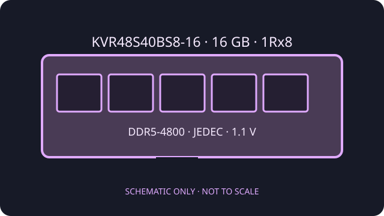

[ KINGSTON VALUERAM // DDR5 MEMORY ]
Kingston ValueRAM KVR48S40BS8-16
An individual 16 GB DDR5 laptop memory module. The model-specific rank, speed, timings, and electrical data below are taken from Kingston's datasheet.

Model specifications
| Exact part / capacity | Kingston ValueRAM KVR48S40BS8-16; 16 GB |
|---|---|
| Form factor / rank | 262-pin DDR5 SO-DIMM; single rank, 1Rx8 |
| Speed / profile | DDR5-4800 (PC5-4800), JEDEC timing 40-39-39 (CL40). SPD is programmed for this JEDEC profile; no XMP or EXPO profile is specified. |
| Voltage | 1.1 V operating module voltage |
| ECC / buffering | Non-ECC, unbuffered client module. DDR5 on-die ECC is present in the memory devices; it is not system-level ECC. |
Compatibility guidance
- Use only in a laptop or compact system with a 262-pin DDR5 SO-DIMM socket; it is not compatible with DDR4 or desktop DIMM slots.
- Confirm the host supports 16 GB modules and a single-rank x8 organization. A DDR5 system may train at a lower common rate if its controller or firmware limit is below 4800 MT/s.
- Allow the platform to use the module's JEDEC SPD settings; Kingston does not list an XMP/EXPO overclock profile for this ValueRAM module.
- Check the laptop service manual for slot count, maximum memory, mixed-module behavior, and installation steps. Power down, isolate the battery as directed, and use ESD precautions.
Manufacturer sources
- Kingston — KVR48S40BS8-16 datasheetExact module capacity, organization, rank, JEDEC timings, and voltage.
- Kingston — official product search for KVR48S40BS8-16Manufacturer product and memory compatibility lookup.